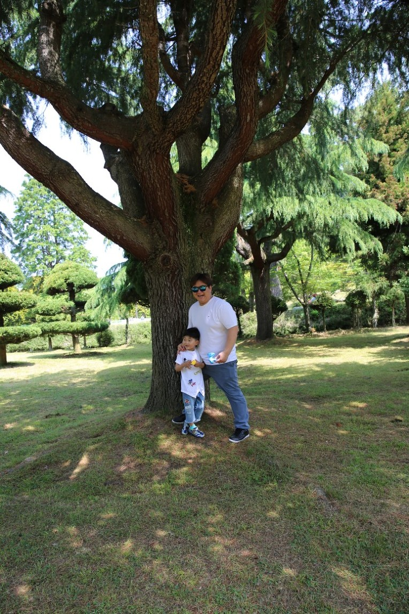

대광그룹 창립 16주년을 맞아 지난 5월12일(금)부터 13일(토)까지 1박2일 일정으로 ‘대광그룹 창립기념 (주)광주대광판넬 임직원 야유회’가 진행되었습니다.
12일 금요일 업무를 마치고 고흥군 금산에 위치한 대광휴양소에서 1박을 한 후 다음날 소록도 공원 관광과 녹동항 회센터에서 점심식사를 한후 보성녹차밭을 둘러보는 코스로 구성되었습니다.
특히 첫날 머문 대광휴양소는 대광가족들만을 위한 휴양소로 '사람이 중심이고 시작이다'라는 대광그룹의 기업이념을 나타내고 있는 곳이어서 더 큰 의미가 있었습니다.
작고 아름다운 섬 '소록도'에서 울창한 나무 숲과 깨끗한 백사장 그리고 한센병 환우들의 애환이 서린 역사적 흔적을 볼수 있었고 인근 섬에서 생산되는 해산물이 집결되는 '녹동항'에서의 점심은 자연을 직접 즐기는 그런 기분이었습니다.
광주로 돌아오는 길에 들린 '짙은 푸름이 가득한 보성 녹차밭'의 풍경은 녹음이 짙어지는 5월을 제대로 느낄수 있었습니다.
대광그룹창립16주년 기념 (주)대광판넬 워크샵을 통해 (주)광주대광판넬 임직원들은 '최고의 품질'을 위해 더욱 더 함께 노력할 것을 다짐하였습니다.

